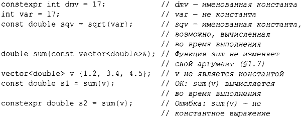
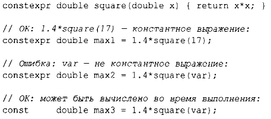
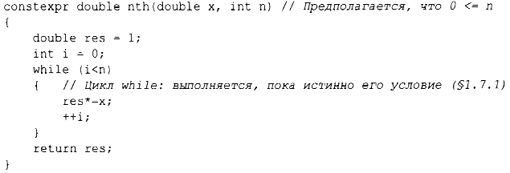

С++ поддерживает два понятия неизменяемости.
Например:
Чтобы функция могла использоваться в константном выражении, т.е. в выражении, которое будет вычисляться компилятором, она должна быть определена как constexpr. Например:
Функция, объявленная как constexpr, может применяться к неконстантным аргументам, но когда это происходит, результат не является константным выражением. Функция, объявленная как constexpr, может вызываться с аргументами, не являющимися константными выражениями, в контекстах, которые не требуют константных выражений. Таким образом, нам не приходится определять, по сути, одну и ту же функцию дважды: один раз - для константных выражений и второй - для переменных.
Чтобы быть объявленной как constexpr, функция должна быть достаточно простой, не должна иметь побочных действий и может использовать только информацию, переданную ей в качестве аргументов. В частности, она не может изменять нелокальные переменные, но может содержать циклы и использовать собственные локальные переменные. Например:
В ряде мест константные выражения требуются правилами языка (например, для границ массивов (§1.7), в метках case (§1.8), аргументах - значениях шаблонов (§6.2) и константах, объявленных с использованием constexpr). В других случаях вычисления времени компиляции оказываются важными с точки зрения производительности программы. Независимо от проблем с производительностью понятие неизменности (объекта с неизменным состоянием) является важной концепцией проектирования.